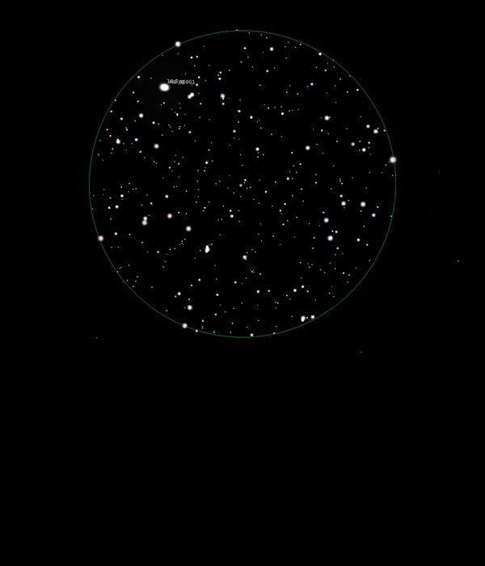

NGC 6826
Planetary Nebula in Cygnus
NGC 6826
Mag 8.8
Caldwell 15, The Blinking Nebula
08/09/16
Small but bright in 12mm in a nice FOV
Observed both with and without UHC filter, better using
inverted vision otherwise it looks like an out of focus star
There does appear to be some nebulosity surrounding it